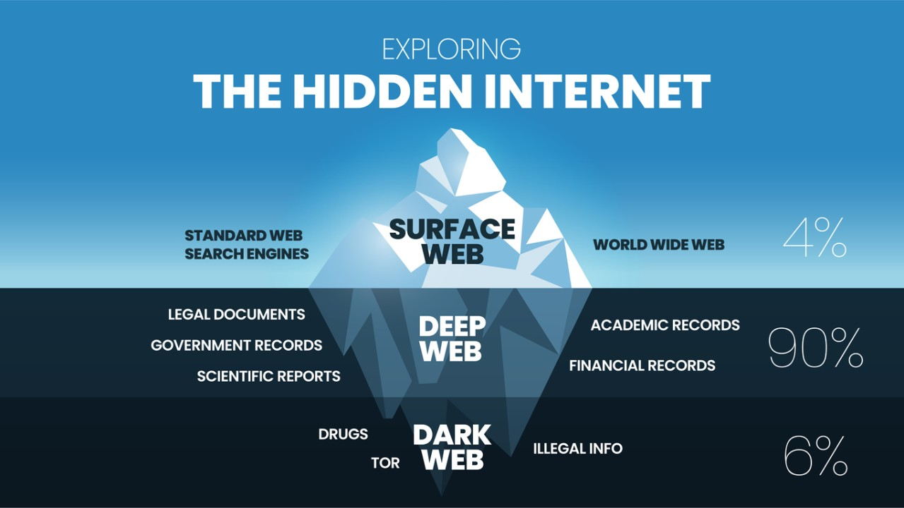

Le Dark Web
Résumé : Le Dark Web est une partie cachée d’Internet accessible uniquement via des logiciels spécifiques comme Tor. Contrairement au Web traditionnel, il ne peut pas être indexé par les moteurs de recherche classiques et nécessite des outils spécialisés pour y accéder. Il est utilisé à la fois pour des activités légitimes, comme la protection de la vie privée, et des activités illégales, comme les marchés noirs et la cybercriminalité.
Le saviez-vous ? Le Dark Web ne représente qu’environ 5% de l’ensemble du Deep Web, mais il est souvent exagéré par les médias.